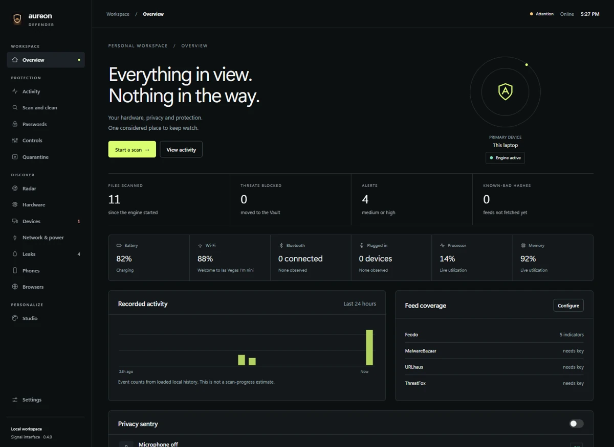
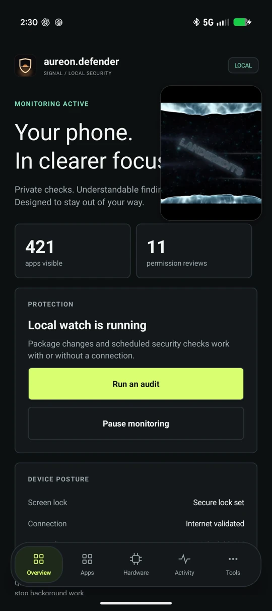

Find your signal.
Review security observations and device activity in one considered workspace. Windows has the deepest host integration.
Compare editions ↗See what’s happening on your devices.
Make your next move with a clearer view.
Finding the right edition for this device…


Less noise.
More understanding.
You stay in control.
Useful tools with visible evidence.
Every edition tells you what it can actually do.
Review security observations and device activity in one considered workspace. Windows has the deepest host integration.
Compare editions ↗Windows offers layered file scanning. Android and web tools compare selected-file hashes with lists you import.
Try the local file tools ↗Review findings and platform limits before acting. A missing detection is never a guarantee that a file is safe.
Inspect the source ↗Direct downloads, with platform requirements shown before you install.
Windows 10/11. Layered scanning, privacy controls, quarantine and the full Signal dashboard.
Local monitoring, visible-package changes, selected-file hash checks and reports. Android limits apply.
Local file/hash and report tools. Add to Home Screen from Safari. No native antivirus or 24/7 monitor.
Open web tools ↗A limited Python companion. Native packages are not yet available. No full Windows-engine parity.
Checking public release notes.
Read the full release ↗Checked when you visit, every five minutes while this page is open, and when you return. Downloads are manual; nothing installs silently.
Select the edition that fits your device.